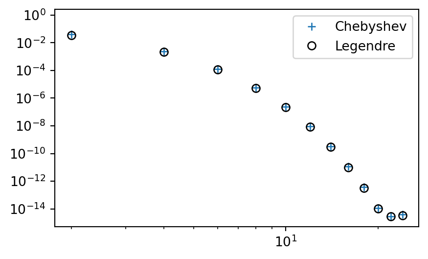
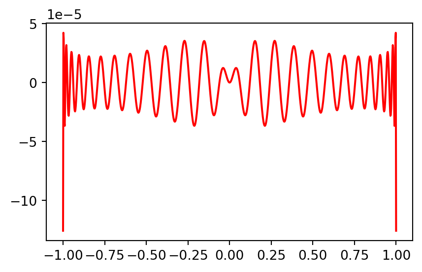

MATMEK-4270
We want to find an approximation to \(u(x)\) using
\[ u(x) \approx u_N(x) = \sum_{k=0}^N \hat{u}_k \psi_k(x) \]
The variational methods make use of integrals over the domain. The \(L^2(\Omega)\) inner product and norms are (in 1D, where \(\Omega=[a, b]\))
\[ (f, g)_{L^2(\Omega)} = \int_{\Omega} f(x) g(x) \, dx \quad \text{and} \quad \|f\|_{L^2(\Omega)} = \sqrt{(f, f)_{L^2(\Omega)}} \]
\[ \small \begin{align*} P_0(x) &= 1, \\ P_1(x) &= x, \\ P_2(x) &= \frac{1}{2}(3x^2-1), \\ &\vdots \\ (j+1)P_{j+1}(x) &= (2j+1)xP_{j}(x) - j P_{j-1}(x). \end{align*} \]
The Galerkin method to approximate \(u(x) \approx u_N(x)\) with Legendre polynomials:
Find \(u_N \in V_N (= \text{span}\{P_j\}_{i=0}^N=\mathbb{P}_N)\) such that
\[ (u-u_N, v)_{L^2(\Omega)} = 0, \quad \forall \, v \in V_N \]
The Chebyshev polynomials are an often preferred alternative to Legendre:
\[ T_k(x) = \cos(k \cos^{-1}(x)), \quad k = 0, 1, \ldots \quad x \in [-1, 1] \]
As recursion: \[ \small \begin{align*} T_0(x) &= 1, \\ T_1(x) &= x, \\ T_2(x) &= 2x^2-1, \\ &\vdots \\ T_{j+1}(x) &= 2xT_{j}(x) - T_{j-1}(x). \end{align*} \]
For \(T_N(x)\) all extrema points (max and mins) and all roots are, respectively
\[ \begin{align} x_j &= \cos\left(\frac{j \pi}{N}\right), &j=0, 1, \ldots, N \\ x_j &= \cos\left( \frac{(2j+1)\pi}{2N}\right), &j=0, 1, \ldots, N-1 \end{align} \]
The Chebyshev polynomials \(\{T_j\}_{j=0}^N\) also form a basis for \(\mathbb{P}_N\). However, the Chebyshev polynomials are not orthogonal in the \(L^2(-1, 1)\) space!
\[ (T_i, T_j)_{L^2(\Omega)} \ne \|T_i\|^2 \delta_{ij} \]
The Chebyshev polynomials are, on the other hand, orthogonal in a special weighted inner product space.
We define the weighted \(L^2_{\omega}(\Omega)\) inner product as
\[ (f, g)_{L^2_{w}(\Omega)} = \int_{\Omega} f(x)g(x)\omega(x)d\Omega, \]
which is more commonly written as \((f, g)_{\omega}\). The weight function \(\omega(x)\) is positive (almost everywhere) and a weighted norm is
\[ \|u\|_{\omega} = \sqrt{(u, u)_{\omega}} \]
The Chebyshev polynomials are orthogonal if \(\omega(x) = (1-x^2)^{-1/2}\) and \(x\in [-1,1]\). We get
\[ (T_i, T_j)_{\omega} = \|T_i\|_{\omega}^2 \delta_{ij} \]
where \(\|T_i\|_{\omega}^2 = \frac{c_i \pi}{2}\) and \(c_i=1\) for \(i>0\) and \(c_0=2\).
The Galerkin method for approximating a smooth function \(u(x)\) is now:
Find \(u_N \in \mathbb{P}_N\) such that
\[ (u-u_N, v)_{\omega} = 0, \quad \forall \, v \in \mathbb{P}_N \]
We get the linear algebra problem by inserting for \(v=T_i\) and \(u_N=\sum_{j=0}^N \hat{u}_j T_j\)
\[ \sum_{j=0}^N(T_j, T_i)_{\omega} \hat{u}_j = (u, T_i)_{\omega} \rightarrow \hat{u}_i = \frac{(u, T_i)_{\omega}}{\|T_i\|^2}, \quad \quad i=0,1,\ldots, N \]
The least squares method is also similar, using \(E_{\omega}=\|e\|^2_{\omega}\):
Find \(u_N \in \mathbb{P}_N\) such that
\[ \frac{\partial E_{\omega}}{\partial \hat{u}_j}=0, \quad j=0,1, \ldots, N \]
We get the linear algebra problem using
\[ \frac{\partial E_{\omega}}{\partial \hat{u}_j} = \frac{\partial}{\partial \hat{u}_j} \int_{-1}^1 e^2 \omega dx = \int_{-1}^1 2e \frac{\partial e}{\partial \hat{u}_j} \omega dx \]
Insert for \(e(x)=u(x)-u_N(x) = u(x)-\sum_{k=0}^N \hat{u}_k T_k\) and you get exactly the same linear equations as for the Galerkin method.
With a physical domain \(x\in [a, b]\) and a reference \(X\in [-1, 1]\), we now have the basis function
\[ \psi_i(x) = T_i(X(x)), \quad i=0,1,\ldots, N \]
and the inner product to compute is
\[ (u(x)-u_N(x), \psi_i(x))_{\omega} = \int_{a}^b (u(x)-u_N(x)) \psi_i(x) \omega(x) dx = 0, \quad i=0, 1, \ldots, N \]
As for Legendre we use a change of variables \(x\rightarrow X\), but there is also a weight function that requires mapping
\[ \omega(x) = \tilde{\omega}(X) = \frac{1}{\sqrt{1-X^2}} \]
for all \(i=0,1,\ldots, N\):
\[ \sum_{j=0}^N \overbrace{\int_{-1}^1 T_j(X) T_i(X) \tilde{\omega}(X) \, \cancel{\frac{dx}{dX}} \, dX}^{\|T_i\|\delta_{ij}} \, \hat{u}_j = \overbrace{\int_{-1}^1 u(x(X)) T_i(X) \tilde{\omega}(X) \, \cancel{\frac{dx}{dX}} \, dX}^{(u(x(X)), T_i)_{\omega}} \]
and finally (using \(\|T_i\|^2=\frac{c_i \pi}{2}\))
\[ \hat{u}_i = \frac{2}{c_i \pi}\left(u(x(X)), T_i\right)_{L^2_{\omega}(-1,1)}, \quad i=0, 1, \ldots, N \]
The procedure is exactly like for Legendre polynomials, but with a weighted inner product using \(L^2_{\omega}(-1,1)\) instead of \(L^2(-1,1)\).
\[ (f, T_i)_{\omega} = \int_{-1}^1 \frac{f(x(X))T_i(X)}{\sqrt{1-X^2}}dX \]
Since \(T_i(X) = \cos(i \cos^{-1}(X))\) a change of variables \(X=\cos \theta\) leads to \(T_i(\cos \theta) = \cos(i \theta)\). Using the change of variables for the integral:
\[ (f, T_i)_{\omega} = \int_{\pi}^{0} \frac{f(x(\cos \theta))T_i(\cos \theta)}{\sqrt{1-\cos^2 \theta}} \frac{d \cos \theta}{d \theta} d\theta. \]
Insert for \(1-\cos^2\theta = \sin^2\theta\) and swap both the direction of the integration and the sign:
\[ (f, T_i)_{\omega}= \int_{0}^{\pi} f(x(\cos \theta))T_i(\cos \theta) d\theta. \]
\[ (f, T_i)_{\omega}= \int_{0}^{\pi} f(x(\cos \theta))T_i(\cos \theta) d\theta. \]
Using \(T_i(\cos \theta) = \cos (i \theta)\) we get the much simpler integral
\[ (f, T_i)_{\omega} = \int_{0}^{\pi} f(x(\cos \theta))\cos (i \theta) d\theta. \]
Using this integral, we get the Chebyshev coefficients
\[ \hat{u}_i = \frac{2}{c_i \pi}\int_{0}^{\pi} u(x(\cos \theta)) \cos(i \theta) d\theta, \quad i=0, 1, \ldots, N \]
Lets try this with an example.
x = sp.Symbol('x', real=True)
k = sp.Symbol('k', integer=True, positive=True)
Tk = lambda k, x: sp.cos(k * sp.acos(x))
cj = lambda j: 2 if j == 0 else 1
def innerw(u, v, domain, ref_domain=(-1, 1)):
A, B = ref_domain
a, b = domain
# map u(x(X)) to use reference coordinate X.
# Note that small x here in the end will be ref coord.
us = u.subs(x, a + (b-a)*(x-A)/(B-A))
# Change variables x=cos(theta)
us = sp.simplify(us.subs(x, sp.cos(x)), inverse=True) # X=cos(theta)
vs = sp.simplify(v.subs(x, sp.cos(x)), inverse=True) # X=cos(theta)
return sp.integrate(us*vs, (x, 0, sp.pi))Note
We use the Sympy function simplify with inverse=True, which is required for Sympy to use that \(\cos^{-1}(\cos x) = x\), which is not necessarily true.
from numpy.polynomial import Chebyshev
u = 10*(x-1)**2-1
uhat = lambda u, j: 2 / (cj(j) * sp.pi) * innerw(u, Tk(j, x), (1, 2))
plt.figure(figsize=(8, 3.5))
xj = np.linspace(1, 2, 100)
uhj = [uhat(u, j) for j in range(6)]
C2, C3 = Chebyshev(uhj[:2], domain=(1, 2)), Chebyshev(uhj[:3], domain=(1, 2))
plt.plot(xj, sp.lambdify(x, u)(xj), 'b')
plt.plot(xj, C2(xj), 'r:'); plt.plot(xj, C3(xj), 'g--')
plt.plot(xj, 7/3+5*(-1+2*(xj-1)), 'm--')
plt.legend(['$10(x-1)^2-1$', f'{C2}', f'{C3}', 'Legendre: 7/3+5$P_1(x)$']);Different from Legendre for the linear profile. But not by much. Why is it different?
\[ \omega(x) = \frac{1}{\sqrt{1-x^2}} \]
So the weighted Chebyshev approach has smaller errors towards the edges.
\[ u(x) = e^{\cos x}, \quad x \in [-1,1] \]
Use numerical integration and change of variables
from scipy.integrate import quad
def innerwn(u, v, domain, ref_domain=(-1, 1)):
A, B = ref_domain
a, b = domain
us = u.subs(x, a + (b-a)*(x-A)/(B-A)) # u(x(X))
us = sp.simplify(us.subs(x, sp.cos(x)), inverse=True) # X=cos(theta)
vs = sp.simplify(v.subs(x, sp.cos(x)), inverse=True) # X=cos(theta)
return quad(sp.lambdify(x, us*vs), 0, np.pi)[0]
u = sp.exp(sp.cos(x))
#uhat = lambda u, j: 2 / (cj(j) * sp.pi) * innerw(u, Tk(j, x), (-1, 1)) # slow
uhatn = lambda u, j: 2 / (cj(j) * np.pi) * innerwn(u, Tk(j, x), (-1, 1))Remember, we are computing for \(i=0, 1, \ldots, N\)
\[ \hat{u}_i = \frac{2}{c_i \pi} \int_{-1}^1 u(x(X)) T_i(X) \tilde{\omega}(X) dX = \frac{2}{c_i \pi}\int_{0}^{\pi} u(x(\cos \theta)) \cos(i \theta) d\theta \]
# Compute Chebyshev coefficients:
N = 25
uc = [uhatn(u, n) for n in range(N)]
# Compute Legendre coefficients:
from numpy.polynomial import Legendre
def innern(u, v):
uj = lambda xj: sp.lambdify(x, u)(xj)*v(xj)
return quad(uj, -1, 1)[0]
uhatj = lambda u, j: (2*j+1) * innern(u, Legendre.basis(j))/2
ul = [uhatj(u, n) for n in range(N)]
plt.figure(figsize=(5, 3))
plt.semilogy(np.arange(0, N, 2), uc[::2], '+',
np.arange(0, N, 2), ul[::2], 'ko', fillstyle='none')
plt.title('Coefficients $\hat{u}_j$')
plt.legend(['Chebyshev', 'Legendre']);Very similar convergence. Chebyshev coefficients are slightly smaller than Legendre. How about the \(L^2\) error?
def L2_error(uh, ue, space=Legendre):
xj = np.linspace(-1, 1, 1000)
uej = sp.lambdify(x, ue)(xj)
err = []
for n in range(0, len(uh), 2):
uj = space(uh[:(n+1)])(xj).astype(float)
err.append(np.sqrt(np.trapz((uj-uej)**2, dx=xj[1]-xj[0])))
return err
errc = L2_error(uc, u, Chebyshev)
errl = L2_error(ul, u, Legendre)
plt.figure(figsize=(5, 3))
plt.loglog(np.arange(0, N, 2), errc, '+',
np.arange(0, N, 2), errl, 'ko', fillstyle='none')
plt.legend(['Chebyshev', 'Legendre']);
In 2D we will try to find \(u_N(x,y) \in W_N\), which implies:
\[ u(x, y) \approx u_{N}(x, y) = \sum_{i=0}^N \hat{u}_{i}\Psi_{i}(x, y), \]
There are not all that many two-dimensional basis functions and a more common approach is to use one basis function for the \(x\)-direction and another for the \(y\)-direction
\[ u_N(x, y) = \sum_{i=0}^{N_x}\sum_{j=0}^{N_y} \hat{u}_{ij}\psi_{i}(x) \varphi_j(y). \]
Note
The unknowns \(\{\hat{u}_{ij}\}_{i,j=0}^{N_x,N_y}\) are now in the form of a matrix. The total number of unknowns: \(N+1=(N_x+1)\cdot (N_y+1)\).
The most straightforward approach is to use the same basis functions for both directions. For example, with a Chebyshev basis
\[ u_N(x, y) = \sum_{i=0}^{N_x}\sum_{j=0}^{N_y} \hat{u}_{ij}T_{i}(x)T_j(y). \]
We can define two one-dimensional function spaces for the two directions as
\[ V_{N_x} = \text{span}\{\psi_i\}_{i=0}^{N_x} \quad \text{and} \quad V_{N_y} = \text{span}\{\varphi_i\}_{i=0}^{N_y} \]
with a 2D domain \(\Omega\) created as Cartesian products of two 1D domains:
\[ {I}_x = [a, b] \quad \text{and} \quad {I}_y = [c, d] \rightarrow \Omega = I_x \times I_y \]
A two-dimensional function space can then be created as
\[ W_N = V_{N_x} \otimes V_{N_y}, \quad (x, y) \in \Omega. \]
\(W_N\) is the tensor product of \(V_{N_x}\) and \(V_{N_y}\)
Similarly,
\[ \Psi_{ij}(x, y) = \psi_i(x) \varphi_j(y) \]
\(\Psi_{ij}\) is the tensor product (or outer product) of \(\psi_i\) and \(\varphi_j\).
Consider the Cartesian product of the two sequences \((1, 2, 3)\) and \((4, 5)\) and compare with the tensor product
Cartesian product: \[ (1, 2, 3) \times (4, 5) = \begin{bmatrix} (1, 4) \\ (1, 5) \\ (2, 4) \\ (2, 5) \\ (3, 4) \\ (3, 5) \\ \end{bmatrix} \]
Tensor product: \[ (1, 2, 3) \otimes (4, 5) = \begin{bmatrix} 1 \cdot 4 \\ 1 \cdot 5 \\ 2 \cdot 4 \\ 2 \cdot 5 \\ 3 \cdot 4 \\ 3 \cdot 5 \end{bmatrix} = \begin{bmatrix} 4 \\ 5 \\ 8 \\ 10 \\ 12 \\ 15 \end{bmatrix} \]
Cartesian product: \[ (\psi_0, \psi_1) \times (\varphi_0, \varphi_1) = \begin{bmatrix} \left(\psi_0, \varphi_0\right) \\ \left(\psi_0, \varphi_1\right) \\ \left(\psi_1, \varphi_0\right) \\ \left(\psi_1, \varphi_1\right) \end{bmatrix} \]
Tensor product: \[ (\psi_0, \psi_1) \otimes (\varphi_0, \varphi_1) = \begin{bmatrix} \psi_0 \cdot \varphi_0 \\ \psi_0 \cdot \varphi_1 \\ \psi_1 \cdot \varphi_0 \\ \psi_1 \cdot \varphi_1 \end{bmatrix} \]
This tensor product is the basis for \(W_N\):
\[ \{\psi_0\psi_0, \psi_0\psi_1, \psi_1\psi_0, \psi_1\psi_1\} \]
which can also be arranged in matrix notation \(\{\psi_i\varphi_j\}_{i,j=0}^{1,1}\) (\(i\) is row, \(j\) is column)
\[ (\psi_0, \psi_1) \otimes (\varphi_0, \varphi_1) = \begin{bmatrix} \psi_0 \\ \psi_1 \end{bmatrix} \begin{bmatrix} \varphi_0 & \varphi_1 \end{bmatrix} = \begin{bmatrix} \psi_0 \cdot \varphi_0, \psi_0 \cdot \varphi_1 \\ \psi_1 \cdot \varphi_0, \psi_1 \cdot \varphi_1 \end{bmatrix} \]
Use the space of all linear functions in both \(x\) and \(y\) directions
\[ V_{N_x} = \text{span}\{1, x\} \quad \text{and} \quad V_{N_y} = \text{span}\{1, y\} \]
Cartesian product
\[ (1, x) \times (1, y) = \begin{bmatrix} (1, 1) \\ (1, y) \\ (x, 1) \\ (x, y) \end{bmatrix} \]
Tensor product
\[ (1, x) \otimes (1, y) = \begin{bmatrix} 1 \\ y \\ x \\ xy \end{bmatrix} \]
The variational methods require the \(L^2(\Omega)\) inner product
\[ \begin{align*} (f, g)_{L^2(\Omega)} &= \int_{\Omega} f g \, d\Omega, \\ &= \int_{I_x}\int_{I_y} f(x,y)g(x,y)dxdy. \end{align*} \]
Note
The first line is identical to the definition used for the 1D case and is valid for any domain \(\Omega\), not just Cartesian product domains. The only difference for 2D is that \(f\) and \(g\) now are functions of both \(x\) and \(y\) and the the integral over the domain is a double integral.
We want to approximate
\[ u(x, y) \approx u_N(x, y) \]
The Galerkin method is then: find \(u_N \in W_N\) such that
\[ (u - u_N, v) = 0, \quad \forall \, v \in W_N \tag{1} \]
In order to solve the problem we just choose basis functions and solve (1). For example, use Legendre polynomials in both \(x\) and \(y\)-directions.
\[ V_{N_x} = \text{span}\{P_i\}_{i=0}^{N_x}, \quad \text{and} \quad V_{N_y} = \text{span}\{P_j\}_{j=0}^{N_y} \]
\[ W_N = V_{N_x} \otimes V_{N_y} = \text{span}\{P_iP_j\}_{i,j=0}^{N_x, N_y} \]
\[ v = P_m(x)P_n(y) \quad \text{and} \quad u_N = \sum_{i=0}^{N_x}\sum_{j=0}^{N_y}\hat{u}_{ij} P_i(x) P_j(y) \]
It becomes a bit messy, with 4 different indices:
\[ \int_{-1}^1\int_{-1}^1 \left(u - \sum_{i=0}^N \sum_{j=0}^N \hat{u}_{ij} P_i(x)P_j(y)\right) P_m(x)P_n(y) dx dy \]
Note that the unknown coefficients \(\hat{u}_{ij}\) are independent of space and we can simplify the double integrals by separating them into one integral for \(x\) and one for \(y\). For example
\[ \int_{-1}^1 \int_{-1}^1 P_i(x)P_j(y) P_m(x)P_n(y) dx dy = \underbrace{\int_{-1}^1 P_i(x)P_m(x)dx}_{a_{mi}} \underbrace{\int_{-1}^1 P_j(y) P_n(y) dy}_{a_{nj}} \]
\[ \text{With} \quad v = P_m(x)P_n(y) \quad \text{and} \quad u_N = \sum_{i=0}^{N_x}\sum_{j=0}^{N_y}\hat{u}_{ij} P_i(x) P_j(y) \]
\[ (u-u_N, v)=0 \rightarrow \int_{-1}^1\int_{-1}^1 \left(u - \sum_{i=0}^N \sum_{j=0}^N \hat{u}_{ij} P_i(x)P_j(y)\right) P_m(x)P_n(y) dx dy = 0 \]
\[ (u, v) = \int_{-1}^1 \int_{-1}^1 u(x, y) P_m(x)P_n(y) dx dy = u_{mn} \]
\[ (u_N, v) := \sum_{i=0}^{N_x} \sum_{j=0}^{N_y} a_{mi}a_{nj} \hat{u}_{ij} \]
\[ (u-u_N,v)=0 \longrightarrow \boxed{ \sum_{i=0}^{N_x} \sum_{j=0}^{N_y} a_{mi}a_{nj} \hat{u}_{ij} = u_{mn}}, \quad (m, n) = (0, \ldots, N_x) \times (0, \ldots, N_y) \]
\[ \begin{align} \sum_{i=0}^{N_x} \sum_{j=0}^{N_y} a_{mi}a_{nj} \hat{u}_{ij} &= u_{mn}, \quad (m,n)\in (0, \ldots, N_x) \times (0, \ldots, N_y) \\ \longrightarrow A \hat{U} A &= U \end{align} \]
Can solve for \(U\) with the vec-trick (\(\text{vec}(A \hat{U} A^T) = (A \otimes A) \text{vec}{(\hat{U})}\))
\[ \begin{align} (A \otimes A) \text{vec}(\hat{U}) &= \text{vec}(U) \\ \text{vec}(\hat{U}) &= (A \otimes A)^{-1} \text{vec}(U) \end{align} \]
However, since \(A\) here is a diagonal matrix and we only have one matrix \((A\hat{U}A)\) it is actually much easier to just avoid the vectorization and solve directly
\[ \hat{U} = A^{-1} U A^{-1}. \]
\[ \small u(x, y)=\exp(-(x^2+2(y-0.5)^2)), (x, y) \in [-1, 1] \times [-1, 1] \]
Find \(u_N \in W_N = V_{N_x} \otimes V_{N_y}\) using Legendre polynomials for both directions. With Galerkin: find \(u_N \in W_N\) such that
\[ (u-u_N,v)=0 \quad \forall \, v \in W_N \]
import scipy.sparse as sparse
from scipy.integrate import dblquad
ue = sp.exp(-(x**2+2*(y-sp.S.Half)**2))
uh = lambda i, j: dblquad(sp.lambdify((x, y), ue*sp.legendre(i, x)*sp.legendre(j, y)), -1, 1, -1, 1, epsabs=1e-12)[0]
N = 8
uij = np.zeros((N+1, N+1))
for i in range(N+1):
for j in range(N+1):
uij[i, j] = uh(i, j)
A_inv = sparse.diags([(2*np.arange(N+1)+1)/2], [0], (N+1, N+1))
uhat_ij = A_inv @ uij @ A_invWe have found \(\{\hat{u}_{ij}\}_{i,j=0}^{N_x,N_y}\), so now we can evaluate
\[ u_N(x, y) = \sum_{i=0}^{N_x}\sum_{j=0}^{N_y} \hat{u}_{ij} P_i(x)P_j(y) \]
for any \(x, y\), preferably within the domain \([-1, 1] \times [-1, 1]\).
How to do this?
A simple double for-loop will do, or on matrix-vector form to avoid the for-loop. Use \(\boldsymbol{P_x}=(P_0(x), \ldots, P_{N_x})\) and \(\boldsymbol{P_y}=(P_0(y), \ldots, P_{N_y}(y))\)
\[ \boldsymbol{P_x} \hat{U} \boldsymbol{P_{y}}^T = \begin{bmatrix} P_0(x)& \ldots& P_{N_x}(x)\end{bmatrix} \begin{bmatrix} u_{0,0} & \cdots & u_{0,N_y} \\ \vdots & \ddots & \vdots \\ u_{N_x, 0} & \cdots & u_{N_x,N_y} \end{bmatrix} \begin{bmatrix} P_0(y) \\ \vdots \\ P_{N_y}(y) \end{bmatrix} \]
It is very common to compute the solution on a 2D computational Cartesian grid \(\boldsymbol{x}= (x_0, x_1, \ldots, x_{N_x})\) and \(\boldsymbol{y}=(y_0, y_1, \ldots, y_{N_y})\):
\[ \boldsymbol{x} \times \boldsymbol{y} = \{(x, y) | x \in \boldsymbol{x} \text{ and } y \in \boldsymbol{y}\} \]
\[ u_N(x_i, y_j) = \sum_{m=0}^N \sum_{n=0}^N \hat{u}_{mn} P_m(x_i)P_n(y_j). \]
Four nested for-loops, or a triple matrix product
\[ \begin{bmatrix} P_0(x_0)& \ldots& P_{N_x}(x_0) \\ \vdots& \ddots & \vdots \\ P_{0}(x_{N_x})& \ldots & P_{N_x}(x_{N_x}) \end{bmatrix} \begin{bmatrix} \hat{u}_{0,0} & \cdots & \hat{u}_{0,N_y} \\ \vdots & \ddots & \vdots \\ \hat{u}_{N_x, 0} & \cdots & \hat{u}_{N_x,N_y} \end{bmatrix} \begin{bmatrix} P_0(y_0)& \ldots& P_{0}(y_{N_y}) \\ \vdots& \ddots & \vdots \\ P_{N_y}(y_{0})& \ldots & P_{N_y}(y_{N_y}) \end{bmatrix} \] If \(\boldsymbol{P_x} = \{P_j(x_i)\}_{i,j=0}^{N_x, N_x}\) and \(\boldsymbol{P_y} = \{P_j(y_i)\}_{i,j=0}^{N_y, N_y}\) this is simply:
\[ \boldsymbol{P_x} \hat{U} \boldsymbol{P_y}^T \]
def eval2D(xi, yi, uhat):
Vx = np.polynomial.legendre.legvander(xi, uhat.shape[0]-1)
Vy = np.polynomial.legendre.legvander(yi, uhat.shape[1]-1)
return Vx @ uhat @ Vy.T
N = 20
xi = np.linspace(-1, 1, N+1)
U = eval2D(xi, xi, uhat_ij)
xij, yij = np.meshgrid(xi, xi, indexing='ij', sparse=False)
plt.contourf(xij, yij, U)\[ \small \|u-u_N\|_{\ell^2} =\sqrt{\frac{4}{N_xN_y} \sum_{i=0}^{N_x}\sum_{j=0}^{N_y} (u(x_i,y_j)-u_N(x_i,y_j))^2} \]
def l2error(uh_ij):
N = uh_ij.shape[0]-1
xi = np.linspace(-1, 1, N+1)
U = eval2D(xi, xi, uh_ij)
xij, yij = np.meshgrid(xi, xi, indexing='ij', sparse=True)
ueij = sp.lambdify((x, y), ue)(xij, yij)
return np.linalg.norm(U-ueij)*(2/N)
def solve(N):
uij = np.zeros((N+1, N+1))
for i in range(N+1):
for j in range(N+1):
uij[i, j] = uh(i, j)
A_inv = sparse.diags([(2*np.arange(N+1)+1)/2], [0], (N+1, N+1))
return A_inv @ uij @ A_inv
error = []
for n in range(4, 24, 2):
error.append(l2error(solve(n)))
plt.figure(figsize=(5, 3))
plt.semilogy(np.arange(4, 24, 2), error);Approximate with Legendre polynomials through Shenfun and the Galerkin method
\[ u(x)=\frac{1}{1+25x^2} \quad x \in [-1, 1] \rightarrow \hat{u}_j = \frac{2j+1}{2}(u, P_j) \]
import shenfun as sf
N = 50
ue = 1./(1+25*x**2)
V = sf.FunctionSpace(N+1, 'Legendre', domain=(-1, 1))
v = sf.TestFunction(V)
uh = (2*np.arange(N+1)+1)/2*sf.inner(ue, v)
plt.figure(figsize=(6, 3))
plt.plot(V.mesh(), uh.backward(), 'b', V.mesh(), sp.lambdify(x, ue)(V.mesh()), 'ro')
plt.legend(['Legendre', 'Exact'])Note the implementation. Choose FunctionSpace and compute Legendre coefficients using the inner product, with \(v=P_j\) as a TestFunction for the function space V.

Note the oscillation in the error that is typical of a spactral method.
Who thinks that Chebyshev can do better?
Approximate \(u(x, y)=\exp(-(x^2+2(y-0.5)^2)), (x, y) \in [-1, 1]^2\):
One of the reasons why Chebyshev polynomials are so popular is the fact that you can transform fast between spectral and physical space
\[ u_N(x_i) = \sum_{j=0}^N \hat{u}_j T_j(x_i), \quad i=0, 1, \ldots, N \]
Here
\[ \begin{matrix} \text{Physical points} & \boldsymbol{u} = (u_N(x_i))_{i=0}^N \\ \text{Spectral points} & \boldsymbol{\hat{u}} = (\hat{u}_i)_{i=0}^N \end{matrix} \]
Slow implementation: Using \(\boldsymbol{T} = (T_j(x_i))_{i,j=0}^{N, N}\) we get
\[ \boldsymbol{u} = \boldsymbol{T} \boldsymbol{\hat{u}} \]
which is computed in \((2N+1)(N+1)\) floating point operations, which scales as \(\mathcal{O}(N^2)\).
N = 10
T = np.polynomial.chebyshev.chebvander(np.cos(np.arange(N)*np.pi/(N-1)), N)
uhat = np.random.random(N+1)
u = T @ uhat
print(u)[ 4.36800018 -0.00593321 1.37779832 -0.53597051 1.61093375 1.23534919
1.51810735 0.40889198 0.78576296 0.62724195]Slow because you use \(\mathcal{O}(N^2)\) floating point operations and memory demanding because you need a matrix \(\boldsymbol{T} \in \mathbb{R}^{(N+1)\times (N+1)}\).
Lets describe a faster way to compute \(\boldsymbol{u}=(u_N(x_i))_{i=0}^N\) from \(\boldsymbol{\hat{u}}=(\hat{u}_i)_{i=0}^N\)
Let
\[ x_i = \cos(i \pi / N), \quad i=0, 1, \ldots, N \]
such that for \(i=0, 1, \ldots, N\):
\[ \begin{align} u_N(x_i) &= \sum_{j=0}^N \hat{u}_j T_j(x_i)\\ u_N(x_i) &= \sum_{j=0}^N \hat{u}_j \cos(j i \pi /N) \\ u_N(x_i) &= \hat{u}_0 + (-1)^{i}\hat{u}_N + \sum_{j=1}^{N-1} \hat{u}_j \cos(j i \pi /N) \end{align} \]
The discrete cosine transform of type 1 is defined to transform the real numbers \(\boldsymbol{y}=(y_i)_{i=0}^N\) into \(\boldsymbol{Y}=(Y_i)_{i=0}^N\) such that
\[ Y_i = y_0 + (-1)^{i}y_N + 2\sum_{j=1}^{N-1}y_j \cos(ij\pi / N), \quad i=0,1,\ldots, N \]
This operation can be evaluated in \(\mathcal{O}(N \log_2 N)\) floating point operations, using the Fast Fourier Transform (FFT). Vectorized:
\[ \boldsymbol{Y} = DCT^1(\boldsymbol{y}) \]
The DCT is found in scipy and we will now use it to compute a fast Chebyshev transform.
We have the \(DCT^1\) for any \(\boldsymbol{Y}\) and \(\boldsymbol{y}\) \[ \small Y_i = y_0 + (-1)^{i}y_N + 2\sum_{j=1}^{N-1}y_j \cos(ij\pi / N), \quad i=0,1,\ldots, N \]
We want to compute the following using the fast \(DCT^1\) \[ \small u_N(x_i) = \hat{u}_0 + (-1)^{i}\hat{u}_N + \sum_{j=1}^{N-1} \hat{u}_j \cos(j i \pi /N), \quad i=0,1,\ldots, N \tag{1} \]
Rearrange (1) my multiplying by 2: \[ \small 2u_N(x_i)-\hat{u}_0-(-1)^{i}\hat{u}_N = \overbrace{\hat{u}_0 + (-1)^{i}\hat{u}_N + 2\sum_{j=1}^{N-1}\hat{u}_j \cos(ij\pi / N)}^{DCT^1(\boldsymbol{\hat{u}})_i} \]
\[ \small u_N(x_i) = \frac{DCT^1(\boldsymbol{\hat{u}})_i + \hat{u}_0 + (-1)^{i}\hat{u}_N}{2} \]
\[ \boldsymbol{u} = \frac{DCT^1(\boldsymbol{\hat{u}}) + \hat{u}_0 + I_m \hat{u}_N}{2} \]
where
\[ I_m = ((-1)^{i})_{i=0}^N \]
import scipy
def evaluate_cheb_1(uhat):
N = len(uhat)
uj = scipy.fft.dct(uhat, type=1)
uj += uhat[0]
uj[::2] += uhat[-1]
uj[1::2] -= uhat[-1]
uj *= 0.5
return uj
N = 1000
xi = np.cos(np.arange(N+1)*np.pi/N)
T = np.polynomial.chebyshev.chebvander(xi, N)
uhat = np.ones(N+1)
uj = T @ uhat
uj_fast = evaluate_cheb_1(uhat)
assert np.allclose(uj, uj_fast) Timing of regular transform: